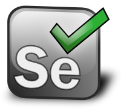
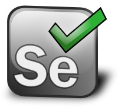

During Mod III, in the Software Testing & Quality Assurance class, we learned about the importance of bug tracking. We learned that through out history, bugs have caused many damages and also has cost a lot of money to some companies. The reason why this is important is because bugs need to be found early so that major problems can be avoided.
We learned what is GitHub and how it can be used in the workplace. We learned that GitHub is a type of VCS, or version control system. VCS’s are used to track down the history of any changes made into the coding of a software. In a VCS, a whole team can be working on a single project and any changes done will be saved, along with a summary and description of why those changes were made. Also, with VCS, developers are able to compare their current versions of their projects to their past ones.

 
